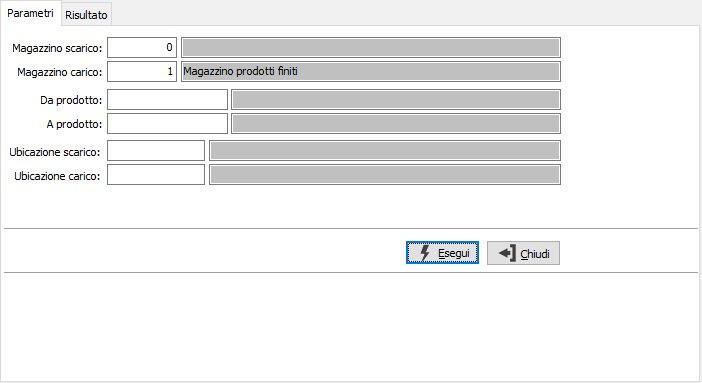
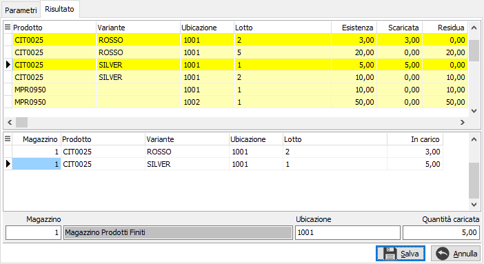
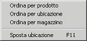

Generazione automatica trasferimento ubicazioni
Da questa finestra è possibile specificare da quali magazzini effettuare il trasferimento e verso quali magazzini indirizzare i prodotti. Dopo aver inserito i criteri di selezione e premuto il pulsante Esegui, i prodotti giacenti vengono visualizzati nella finestra di selezione.

MAGAZZINO DI SCARICO: codice del magazzino da cui saranno prelevati i prodotti da scaricare. Sul campo sono attive le funzioni di ricerca (F9). Nel caso si lasciato il valore zero saranno analizzati tutti i magazzini.
MAGAZZINO DI CARICO: campo obbligatorio: codice del magazzino in cui saranno spostati i prodotti. Sul campo sono attive le funzioni di ricerca (F9).
DA PRODOTTO: eventuale codice dell'articolo, presente in anagrafica Prodotti, da cui si desidera iniziare la selezione. Confermando a vuoto, la selezione inizia con il primo prodotto valido. Sul campo è attiva la ricerca (F9) sull’anagrafica prodotti.
A PRODOTTO: eventuale codice dell'articolo, presente in anagrafica Prodotti, a cui si desidera terminare la selezione. Confermando a vuoto, la selezione termina con l’ultimo valido. Sul campo è attiva la ricerca (F9) sull’anagrafica prodotti.
UBICAZIONE SCARICO: consente di specificare l'ubicazione da scaricare.
UBICAZIONE CARICO: consente di specificare l'ubicazione da caricare; sarà utilizzata come ubicazione di destinazione nella pagina dei risultati.
La pressione del pulsante Esegui effettua l'elaborazione ed accede alla finestra di selezione.

La finestra è suddivisa in tre sezioni.
Nella griglia superiore sono presenti i prodotti giacenti nel magazzino selezionato per lo scarico; se non è stato specificato il magazzino di appartenenza sarà visualizzato sulla griglia. Per selezionare oppure annullare la selezione di un rigo è sufficiente fare doppio clic con il mouse sul rigo interessato (se selezionato verrà annullata la

selezione altrimenti il contrario). È anche possibile utilizzare il menù indicato a lato (attivato tramite la pressione del tasto destro del mouse) oppure utilizzare gli appositi tasti funzione. È possibile modificare l'ordinamento con cui vengono visualizzati i prodotti selezionando l'ordinamento preferito. E' anche possibile spostare letteralmente un prodotto trascinandolo nella griglia sottostante. Se un rigo viene trasferito completamente lo sfondo appare di colore giallo, se viene trasferito parzialmente lo sfondo assume un colore giallo molto più chiaro, altrimenti lo sfondo rimane bianco.Nella sezione intermedia sono visualizzati i prodotti che vengono spostati sul magazzino selezionato come destinazione. Per annullare la selezione di un rigo è sufficiente fare doppio clic con il mouse sul rigo interessato. È anche possibile utilizzare il menù indicato a lato (attivato tramite la pressione del tasto destro del mouse) oppure utilizzare l'apposito tasto.
Nella sezione inferiore è visualizzato il pannello di input relativo ai prodotti spostati sul magazzino selezionato come destinazione, dal quale è possibile intervenire manualmente sulla quantità ed eventualmente anche sul codice del magazzino di destinazione.
La pressione sul pulsante Salva determina l'inserimento dei dati selezionati nel movimento di trasferimento.